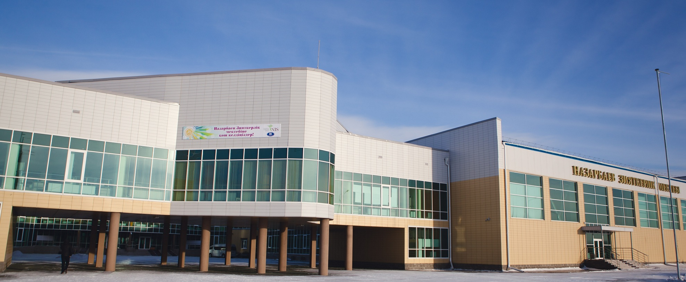

Hi everyone! In this post, I will be talking about my study experience in Nazarbayev Intellectual School (NIS) in Semey. To be honest, I really appreciate this place and academic staff since I changed my mind in this school.
I will definitely agree with many people who say that studying at school was one of the most fun and exciting period in our life!
The main lesson that I took from NIS is the importance of self-education, time-management, how to master skills by yourself, how to pass exams with reduced stress and many others.
Talent is equally distributed but opportunity is not! (quoted in Leila Janah)
NIS is a place that provides you with favourable educational opportunities. If you are really interested in olympiads or projects on particular subjects, then teachers, curators and administrative staff will encourage and help you to
participate
in different events. Your teacher will do additional work with you if you show your enthusiasm.
One aspect that I really liked in NIS is a format of studying, or how our lessons are going. In many different subjects, we have different class discussions. We talked about different things, do reasoning and sometimes express interesting
and finny viewpoints.
Talking about "unrealistic homework" in NIS, I would definitely say that teachers set measurable tasks and homework. In my experience, the work disciplines and teaches us how to implement complex tasks in a small amount of time. Yeah, sometimes,
students take a very huge amount of work, but it is temporal. In my experience, it is helpful in university because you start to prioritize the things that you need to do.
The school is full of different clubs including table tennis, football, volleyball, chess, music, etc.. I really enjoyed it since you are free to discover new things. It only depends on your desire.
For me as well as for many graduated NIS students, I think that there in the last years, we start to consider a school - as a second home, lessons - not as a requirement that we must attend, but as an opportunity to study, to learn something
and at the same time to laugh and have fun with your teacher, friends, etc.
Also, what makes me really happy about my school is that . I love you NIS!